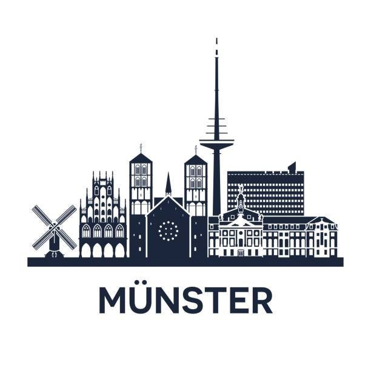
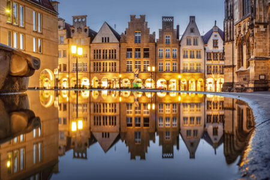
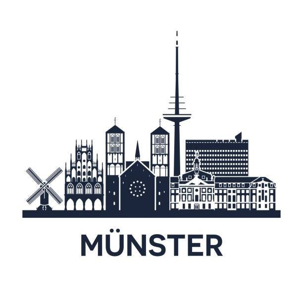
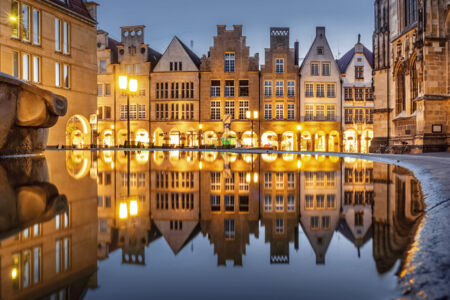

Münster, a charming city in north-west Germany, is the capital of the Westphalia region and a place rich in history and culture that is definitely worth visiting.
Münster's main attractions include the beautiful cathedral, its charming and characteristic cobbled streets, its lively market, its interesting museums and its nightlife, given the many students living here.
Münster is famous for being the place where the Treaty of Westphalia was signed in 1648, bringing the Thirty Years’ War to an end.
This important historical event shaped the city and its historical landmarks can be visited today, including the Münster Peace Hall, situated inside the beautiful old city hall, where the signing of the treaty took place.
The splendid St. Paul’s Cathedral is Münster's most important monument, an example of medieval architecture that dominates the city centre. With its tall Romanesque towers and breathtaking interior, this church is a true architectural gem.
The many museums you can visit in the city include the Museum of Art and Culture, the Civic Museum, the Museum of Natural Sciences and… the Picasso Museum! Thanks to his friendship with Marie-Thérèse Walter, former lover of the painter, a local art dealer managed to obtain hundreds of the Spanish artist’s prestigious lithographs and set up the most important museum dedicated to Picasso outside Spain.
Münster is also known for its many markets, including the famous biweekly market held every Wednesday and Saturday in the main square. Here you can buy fresh local produce, arts and crafts and much more.
In addition, Münster is a university town with a lively nightlife, pleasant parks and plenty of bicycles.
In conclusion, Münster is a city with a rich historical heritage that today captivates tourists with its lively atmosphere and interesting cultural offerings.